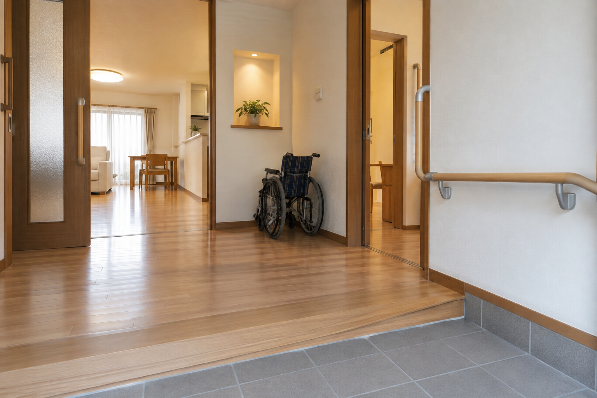
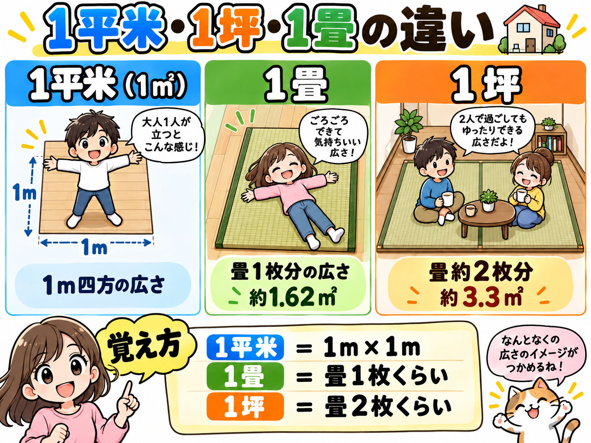
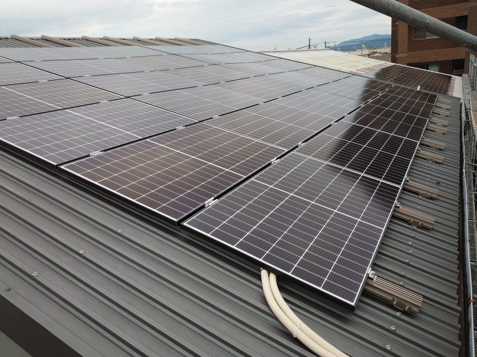
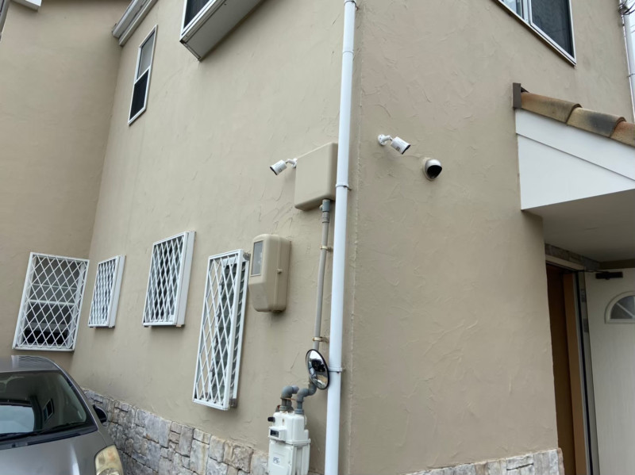
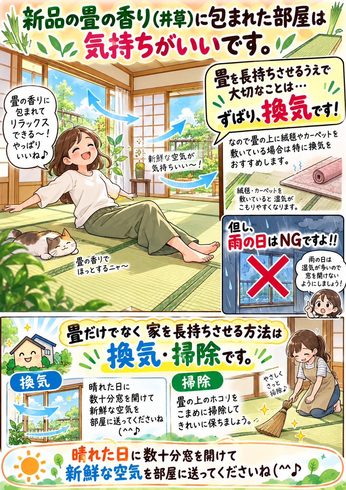

COLUMN
コラム
住まいに役立つ情報や豆知識を、分かりやすくお届けします。

リフォーム・住まいバリアフリーリフォームで考えたい5つの場所
玄関・トイレ・浴室・洗面所・キッチン。暮らしの動線から見直したいポイントを紹介します。
詳しく見る → リフォーム・住まい
リフォーム・住まい急な階段を安全にするには？階段リフォームで知っておきたいこと
蹴上げ・踏面・手すり・照明など、安全性を高めるための考え方を整理します。
詳しく見る →
不動産・基礎知識「㎡・坪・畳」の違いとは？住宅の広さを分かりやすく解説
物件情報や見積書でよく見る面積の単位を、イメージしやすく整理します。
詳しく見る →
設備・防犯太陽光発電は夏が一番発電する？発電量と季節の関係
発電量に影響する日射量・気温・設置環境・屋根の状態について解説します。
詳しく見る →
設備・防犯防犯カメラはどこに付ける？設置するときに考えたいポイント
玄関・駐車場・建物裏側など、目的に合わせた設置位置と死角対策を紹介します。
詳しく見る →
リフォーム・住まい畳を長持ちさせるには？日頃からできるお手入れのポイント
換気・掃除・敷物の扱いなど、畳の湿気対策と日常のお手入れを紹介します。
詳しく見る → リフォーム・住まい
リフォーム・住まい浴室のカビを防ぐには？毎日できる4つのポイント
換気、水分、石けんカス、浴槽の蓋。カビが発生しにくい環境づくりを整理します。
詳しく見る → メンテナンス・災害対策
メンテナンス・災害対策台風が来る前に確認したい住まいのチェックポイント
屋根・外壁・雨樋・窓・ベランダなど、台風シーズン前に確認したい場所を紹介します。
詳しく見る →該当する記事はありません。